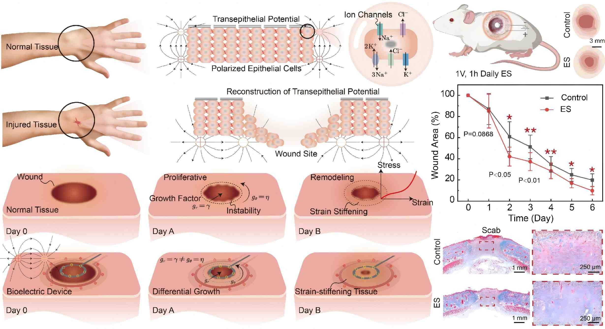
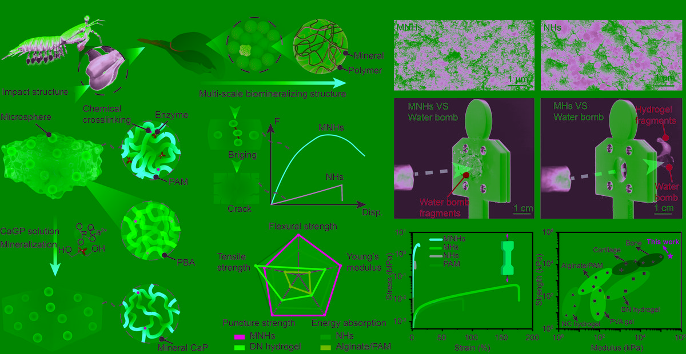
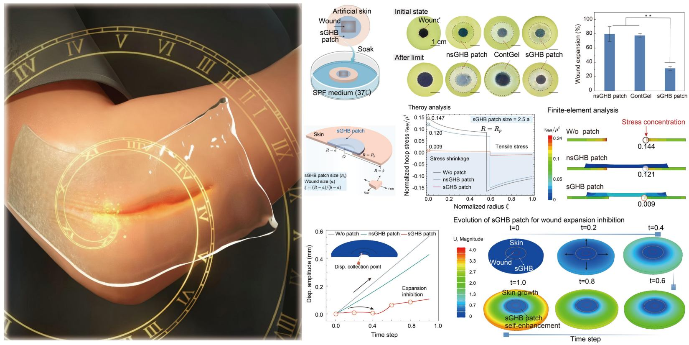

About Me
Welcome! I am Yafei Wang, Associate Professor and PhD Supervisor at Harbin Institute of Technology (HIT). I earned my Ph.D. from HIT and completed my postdoctoral research at Fudan University. Prior to my current position, I served as an Associate Research Fellow at Southern University of Science and Technology (SUSTech). My research primarily centers on solid mechanics, with a particular focus on the instability mechanics of slender structures, as well as the mathematical and physical modeling of biological tissues and soft active materials. Should you have any inquiries or interest in potential collaborations, please feel free to reach out.
Featured Research

Fatigue Resistant Hydrogels Engineered With Twisting Hierarchical Structures, Yinghui Feng#, Yafei Wang#, Chang Wang, Xingmei Chen, Liangjie Shan, Runyi Yan, Zongbao Wang, Sicong Liu, Ji Liu, Advanced Materials, 2026, 202522623.
Abstract: Hydrogels hold significant potential for soft robotics and biomedical applications due to their high-water content, tissue-like softness, and biocompatibility, yet their practical utility remains limited by poor fatigue resistance during long-term dynamic loading. Here, we present a twisting strategy that enhances hydrogel materials' mechanical durability through bioinspired torsion methodology, enabling efficient load transfer and energy dissipation. The resulting fibers exhibit improved tensile strength, stretchability, and unprecedented fatigue thresholds while maintaining structural integrity across prolonged cycling. Our strategy is also compatible with various hydrogel systems including poly(vinyl alcohol), alginate, cellulose and corresponding composite systems. This approach benefits from multiscale simulations, revealing that moderate twisting promotes uniform stress distribution through inter-fiber sliding, while excessive twisting causes geometric locking. Proof-of-concept demonstrations include a frog-tongue-inspired actuator showing rapid yet reversible motion under high-frequency cycling, highlighting its exceptional fatigue tolerance. This bioinspired architecture establishes a universal design paradigm for fatigue-resistant hydrogel systems, unlocking their potential in demanding applications from implantable medical devices to adaptive soft robotics.

Bioinspired hierarchical hydrogels engineered with extreme impact resistance, Yun Tan#, Yafei Wang#, Pei Zhang, Jun Li, Fucheng Wang, Liangjie Shan, Jin Guo, Zongbao Wang, Ji Liu, Advanced Functional Materials, 2025, 202508034.
Abstract: The development of extreme impact-resistant materials holds significant importance across engineering applications, yet remains constrained by the inherent trade-offs among mechanical strength, toughness, and energy dissipation efficiency. Drawing inspiration from natural models, particularly the unique structural design and toughening mechanisms of the mantis shrimp's dactyl club, a kind of nanocomposite hydrogel is developed by synergistically integrating polymer elastic microspheres with enzyme-induced biomineralization. This bioinspired approach produces microsphere-reinforced nanocomposite hydrogels (MNHs) that concurrently deliver exceptional strength, remarkable fracture toughness, and unprecedented resistance to ballistic impacts, surpassing the performance of all existing high-strength hydrogels, thus underscoring their potential for protective applications. Nonlinear numerical and theoretical analyses elucidate the dynamic fracture mechanisms governing both quasi-static and high-speed impact scenarios, revealing crack deflection, microcrack nucleation, and energy redistribution as key toughening pathways. This work not only advances the fundamental understanding of bioinspired structural design principles but also establishes a universal blueprint for next-generation impact-resistant materials, unlocking new frontiers for polymer composites in mechanically demanding scenarios.

Self-growing hydrogel bioadhesives for chronic wound management, Ziman Zheng#, Xingmei Chen#, Yafei Wang#, Ping Wen, Qingfang Duan, Pei Zhang, Liangjie Shan, Zhipeng Ni, Yinghui Feng, Yu Xue, Xing Li, Lin Zhang, Ji Liu, Advanced Materials, 2024, 202408538. (Editor's Choice)
Abstract: Hydrogel bioadhesives have emerged as a promising alternative to wound dressings for chronic wound management. However, many existing bioadhesives do not meet the functional requirements for efficient wound management through dynamically mechanical modulation, due to the reduced wound contractibility, frequent wound recurrence, incapability to actively adapt to external microenvironment variation, especially for those gradually-expanded chronic wounds. Here, a self-growing hydrogel bioadhesive (sGHB) patch that exhibits instant adhesion to biological tissues but also a gradual increase in mechanical strength and interfacial adhesive strength within a 120-h application is presented. The gradually increased mechanics of the sGHB patch could effectively mitigate the stress concentration at the wound edge, and also resist the wound expansion at various stages, thus mechanically contracting the chronic wounds in a programmable manner. The self-growing hydrogel patch demonstrated enhanced wound healing efficacy in a mouse diabetic wound model, by regulating the inflammatory response, promoting the faster re-epithelialization and angiogenesis through mechanical modulation. Such kind of self-growing hydrogel bioadhesives have potential clinical utility for a variety of wound management where dynamic mechanical modulation is indispensable.

Strain stiffening retards growth instability in residually stressed biological tissues, Yafei Wang, Yangkun Du, Fan Xu, Journal of the Mechanics and Physics of Solids, 2023, 178, 105360.
Abstract: Soft biological tissues often exhibit notable strain stiffening under increasing stretch, and this can have significant effects on tissue growth and morphological development, such as causing symmetry breaking in growing airways and leading to mucosal folding and airway hyperresponsiveness. To investigate the role of strain stiffening and the multifactorial control in growth and remodeling, we consider a growing tubular structure with strain-stiffening effects caused by increased and tightened collagen. In addition, we employ the nonlinear hyperelastic Gent model and initial stress symmetry theory to include the coupling effects of differential growth and initial residual stress. Results show that for strain stiffening that takes place at higher strain, the maximum critical growth ratio matches that obtained using neo-Hookean model calculations. Meanwhile, for biological tissues that exhibit strain stiffening under moderate strain conditions, the strain-stiffening effect delays significantly the onset of growth instability. When strain stiffening takes place at very low strains, stiff biological tissues can prevent growth instability, resulting in a smooth hyperelastic cylindrical tubular structure, and the epithelial tissue remains stable at all growth stages without forming any unstable morphology. Our results suggest that strain stiffening can induce retardation instability during biological growth and remodeling, but airway remodeling can incorporate this effect by increasing wall stiffness and reducing obstruction. This highlights the importance of considering the impact of strain stiffening on biological growth and remodeling, which can inform the development of effective clinical interventions for chronic inflammatory airway diseases.